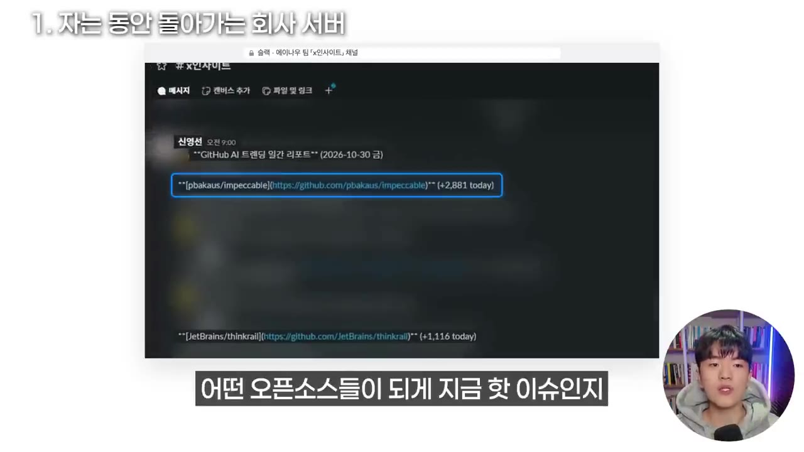
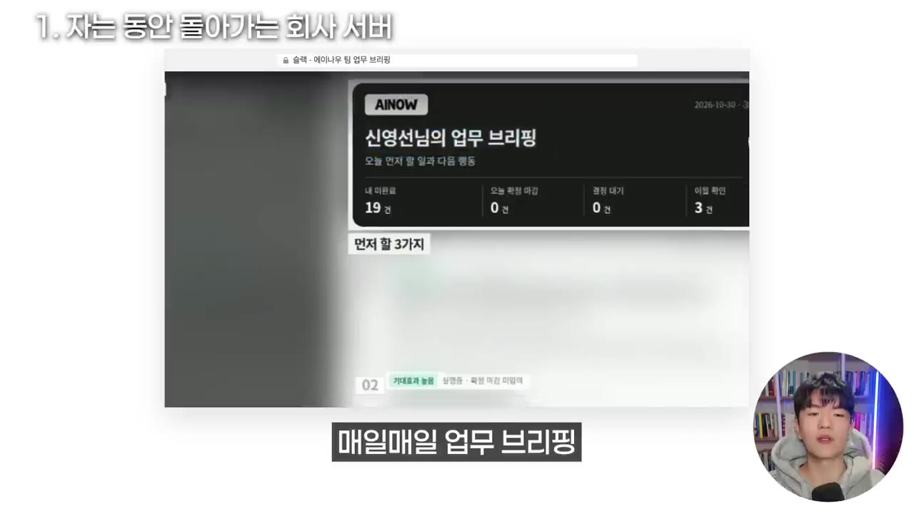
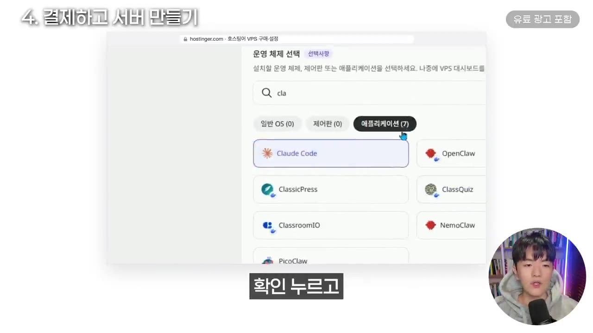
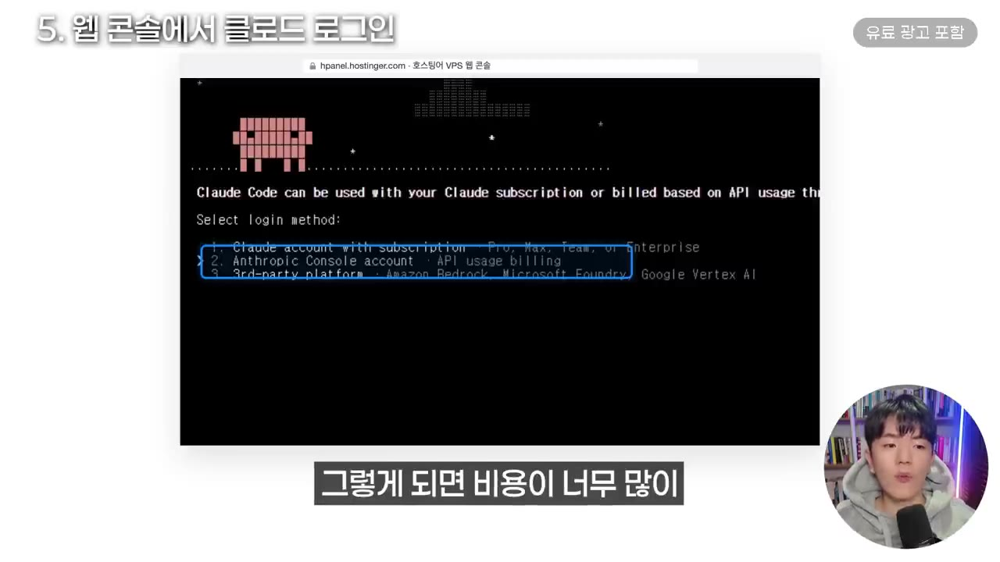
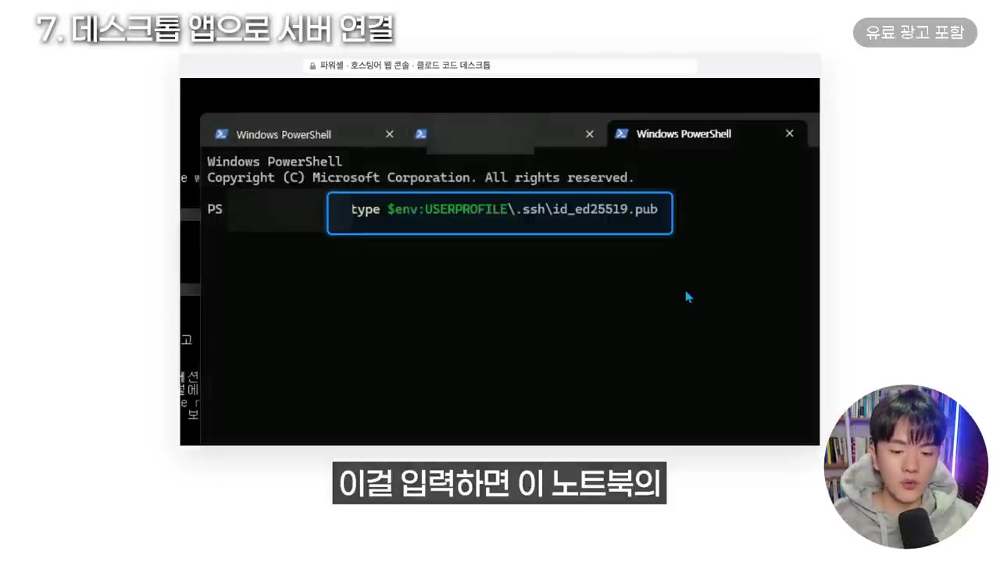
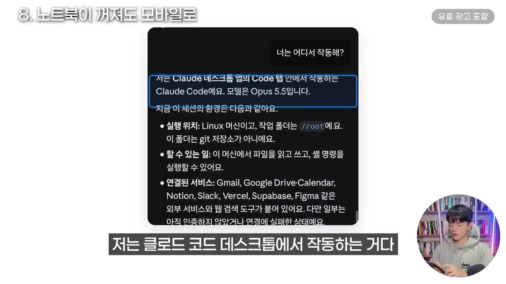

제가 자는 동안 AI가 일합니다 | 클로드 코드 24시간 돌리는 법, 노트북 꺼도 됩니다 (왕초보용)
▶ 원본 영상 보기한눈에 보기
- 노트북을 닫거나 PC를 꺼도 Claude Code가 계속 일하게 하려면, 24시간 켜져 있는 임대 서버(VPS)에 Claude Code를 설치하면 된다.
- 로컬 노트북은 꺼지면 멈추고, Claude 클라우드는 내 PC 파일에 접근하지 못한다. 서버는 둘의 장점을 합친 "AI 전용 사무실"이다.
- 영상은 Hostinger VPS(KVM2면 일반 업무에 충분)에 Claude Code를 올리고, 노트북의 데스크톱 앱과 휴대폰 앱으로 연결하는 과정을 처음부터 끝까지 보여 준다.
- 진행자는 이 서버로 유튜브 영상 요약, 깃허브 트렌드 리포트, 주식 종목 분석, 팀원 업무 브리핑을 자동으로 돌리고 있다.
- 제휴 링크와 할인 코드가 붙은 홍보성 영상이므로, 서버 비용과 선택은 스스로 비교해 판단해야 한다.
이런 분께 도움이 됩니다
- 노트북 사양이 낮거나 장비 구입이 부담스러운데 Claude Code를 상시 돌리고 싶은 분
- 외출 중에도 휴대폰으로 Claude Code에 일을 시키고 싶은 비개발자·초보자
- 정기 리포트·알림을 자동으로 만들어 팀에 보내는 시스템을 구상하는 분
핵심 내용
서버로 돌리면 가능한 자동화 (진행자의 실제 사례)
해외 유튜브 채널에 새 영상이 올라오면 AI가 핵심 인사이트를 이미지로 요약해 팀 채팅방에 공유한다. (0:23)
- 진행자가 지정한 채널만 대상이고, 팀원 학습용으로 쓴다.
깃허브의 인기 오픈소스를 주간(또는 실시간)으로 리포트해, 지금 핫한 것과 팀 시스템에 쓸 만한 것을 추적한다.

- 토스 증권을 연결해 매일 종목을 분석하고 슬랙으로 보고받는다. 여행 중에도 컴퓨터가 꺼져 있어도 계속 돈다. (1:09)
- 매일 팀원별 할 일 목록을 이미지로 만들어 슬랙으로 발송한다. (1:32)

💡 자동화를 서버에 올려 두면 내 컴퓨터 상태와 상관없이 일이 계속 쌓인다.
노트북·클라우드·서버 비교
영상은 세 방식을 사무 공간에 비유한다.
| 방식 | 비유 | 장점 | 한계 |
|---|---|---|---|
| 노트북(로컬) | 집 책상 | 내 PC 파일을 그대로 쓴다. Remote Control(리모트 컨트롤)을 켜면 휴대폰 Claude 앱으로 같은 세션을 이어 쓸 수 있다. | 노트북이 켜져 있어야 한다. 덮개를 닫거나 퇴근 후 전원을 끄거나 배터리 문제가 생기면 멈춘다. |
| Claude 클라우드 | 시간제 스터디룸 | 노트북을 덮거나 꺼도 돌아간다. | 내 PC 파일에 접근하지 못한다. 깃허브 등에 올려 둔 자료만 쓸 수 있어 자유도가 낮다. |
| 서버(VPS) | AI 전용 사무실 | 서버가 꺼지지 않는 한 계속 돈다. 프로젝트 폴더·자료·데이터를 통째로 저장할 수 있고, 로컬 PC와 서버를 번갈아 쓸 수 있다. | 월·연 단위 비용이 든다. |
- 서버는 로컬과 클라우드를 합친 업그레이드판이라는 것이 진행자의 설명이다. (4:12)
서버가 맞는 사람
- 컴퓨터 사양이 낮거나 장비 투자가 부담스러운 사람
- 노트북·PC가 꺼져도 휴대폰으로 시키면 작동하는 환경을 원하는 사람
- 진행자는 맥미니를 새로 사면 100~120만 원, 중고는 약 80만 원이라고 비교한다. 중고는 어떤 문제가 있을지 몰라 추천하지 않고, 서버는 1년에 20~30만 원대라서 합리적이라고 본다. (4:35, 7:00)
호스팅어 VPS 요금제 선택
- 진행자가 호스팅어를 추천하는 이유는 인터페이스가 직관적이어서 비개발자·초보자에게 편하기 때문이다.
- 일반 업무용이면 KVM2로 충분하다. 여러 작업을 동시에 돌리거나 더 쾌적하게 쓰려면 상위 요금제를 고른다. (6:05)
- 진행자는 AI를 정말 24시간 돌려야 해서 KVM8까지 고려했다. 자기 로컬 PC가 비슷한 사양인데도 많이 돌리면 버겁다고 한다.
- 상위 사양 기준은 RAM 16GB 이상, 대역폭 16TB, 디스크 200GB다 (자막상 불분명, 요금제 화면에서 확인).
- 30일 환불 정책이 있고, 쿠폰 코드로 추가 할인을 받을 수 있다. 영상 설명란에는
YEONGSEON또는AINOW(추가 10% 할인)가 적혀 있다. (7:56)
격차는 잘 때 생긴다는 관점
- AI 사용 격차가 커지는 요즘, 잘 쓰는 사람은 남들이 쉬는 시간(수면 중)에도 AI가 일하게 만든다. (15:13)
💡 "진짜 격차는 잘 때 만들어진다."
따라 해보기
준비물
- Claude 구독 계정 1개(영상에서는 Max 계정, 모델 5.5로 연결됨). API 키 방식은 과금이 커질 수 있어 구독 계정을 권한다.
- Hostinger VPS 결제(KVM2 기준 12개월 약 20~30만 원대, 영상 언급 기준). 가격은 변동될 수 있으니 결제 화면에서 확인한다.
- 노트북·PC의 터미널(윈도우 PowerShell), 데스크톱용 Claude Code 앱, 휴대폰 Claude 앱
- 메모장: root 비밀번호와 SSH 키를 보관할 보안된 저장소
- 소요 시간: 영상 기준 약 10~15분
단계별 방법
- 1VPS 요금제 선택
호스팅어에서 VPS 호스팅 → KVM 요금제를 고른다. 일반 업무는 KVM2. (5:41)
- 2결제 옵션 설정
기간(예: 12개월), 서버 위치, 운영체제를 정하고 쿠폰을 넣어 결제한다. (7:12)
- 서버 위치는 가까울수록 빠르다. 영상에서는 인도네시아를 골랐다.
- 운영체제는 "Claude Code"로 최적화된 것을 선택한다.
- 1일 자동 백업은 필요하면 체크한다.

운영 체제 선택에서 애플리케이션 Claude Code 선택 · ▶ 7:45 - 3VPS 설정
결제 후 VPS 설정에서 위치(인도네시아)와 Claude Code를 고르고 root 비밀번호를 만든다. (8:20)
- root 비밀번호와 SSH 키는 반드시 개인 메모장 등에 따로 저장한다.
- 악성코드 스캐너 옵션도 체크한다.
- 4웹 콘솔에서 로그인
VPS 관리 → 웹콘솔을 열고
claude를 입력한다. 테마(다크 모드)를 고르고 구독 계정 로그인(1번)을 선택한다.- 링크를 열어 계정으로 인증한 뒤, 나온 인증 코드를 복사해 터미널에 우클릭 붙여넣기 후 엔터.
- 폴더 신뢰 질문에는 "예(I trust this folder)"를 고른다.

로그인 방식 선택 화면: 1번 구독 계정 로그인 · ▶ 9:18 - 5권한 무시 모드 준비
질문 없이 자동 작업하도록 일반 사용자 계정(
adduser claude)을 만들고 비밀번호를 설정한다. 그 계정으로 전환해 권한 무시 모드로 실행한다.- 새 계정에는 claude 실행 경로가 없어 오류가 나서, 샌드박스 우회 환경변수를 붙여 다시 실행했다. 정확한 명령어는 자막상 불분명하다.
- 6노트북 열쇠 만들기
노트북 PowerShell에서 명령어로 공개키 한 줄을 출력해 복사해 둔다.
- 개인 키(열쇠)는 노트북에만 둔다. 공개 키(자물쇠)만 서버에 등록한다.

PowerShell에서 id_ed25519.pub 공개 키 출력 명령 · ▶ 12:51 - 7서버에 자물쇠 등록
웹 콘솔에서 서버의 공개 키 목록에 방금 복사한 키 한 줄을 넣고 엔터를 누른다. 메모장에서 먼저 정리해 넣으면 편하다.
- 8노트북에서 접속 테스트
VPS 개요 화면에서 접속 명령을 복사해 노트북 터미널에 붙여넣는다. 비밀번호 없이 들어가지면 성공이다.
- 9데스크톱 앱 연결
Claude Code 데스크톱 앱에서 SSH 연결을 추가하고 서버 정보와 SSH 키를 입력한 뒤 연결 테스트를 한다. 세션을 시작하고 권한 무시 모드를 설정한다.
- 10휴대폰에서 이어쓰기
앱 오른쪽 상단에서 리모트 컨트롤이 켜진 것을 확인한다. 데스크톱 앱을 끄고 휴대폰 Claude 앱의 코드 메뉴에서 세션을 열어 일을 시킨다.
5단계 입력할 명령어
- 새 사용자 추가:
adduser claude(영상 화면은 "애드 유저, 클로드 유저"로 들림, 자막상 불분명) - 권한 무시 모드 실행 명령은 영상에서 화면으로만 보여 주고 말로 읽지 않았다. 영상 10:14~11:22 화면을 확인한다.
따라 할 수 있는지 점검
- ✅ 바로 따라 할 수 있음: 요금제 고르기, 결제 옵션 선택, 웹 콘솔 접속과 Claude 로그인, 앱·휴대폰 연결 흐름
- ⚠️ 5단계 「권한 무시 모드 준비」: 실행 명령어와 환경변수 원문이 말로 나오지 않았다 → 영상 10:14~11:22 화면을 확인하거나 Claude Code 공식 문서에서
--dangerously-skip-permissions옵션을 검색한다 (보충). 일반 사용자 계정으로 전환하는 방식은 영상 화면 확인. - ⚠️ 6단계 「노트북 열쇠 만들기」: 공개 키를 출력하는 명령어 원문이 자막에 없다 → 영상 12:31~12:55 화면 확인. 키가 아직 없는 경우 키 생성 과정(
ssh-keygen등)은 영상에 나오지 않는다 (보충). - ⚠️ 9단계 「데스크톱 앱 연결」: 앱의 어느 메뉴에서 SSH 연결을 추가하는지, 입력할 항목 이름이 자막에 불분명하다 → 영상 13:37~14:03 화면 확인.
- ⚠️ 2단계 「결제 옵션」: 쿠폰 코드는 영상 말로는 이름 "영선"이라 했고 설명란에는
YEONGSEON/AINOW로 적혀 있다 → 설명란 기준으로 입력한다. 유료 결제가 필요한 단계다. - ❓ KVM 번호별 사양(RAM·디스크)이 자막에서 뒤섞여 있다 → 호스팅어 요금제 화면에서 직접 확인한다.
확인 방법
- 노트북 터미널에서 비밀번호 없이 서버에 접속된다.
- 데스크톱 앱에서 "안녕하세요"를 보내면 답이 온다.
- 데스크톱 앱을 끄고 휴대폰 Claude 앱의 코드 메뉴에서 같은 세션에 메시지를 보내도 응답이 온다. 영상에서는 "어디서 작동해?"라고 물었더니 로컬 PC가 아닌 서버(리눅스 머신)에서 돈다고 답했다. (14:26)

막히면
- 비밀번호 입력 시 화면에 글자가 안 보여도 입력은 되고 있는 것이다. (10:37)
- 새로 만든 계정에서 claude 실행 경로 오류가 날 수 있다. 영상에서는 환경변수를 붙여 다시 실행해 해결했다.
- root 비밀번호와 SSH 키는 잃어버리지 않게 보안된 저장소에 보관한다.
- 여러 AI 도구를 쓸 때는 하나의 계정으로 통일해 연결하는 것이 관리하기 좋다. (9:28)
- Claude 서버가 "항상 켜진 상태"로 작업하는 것은 아니다. 영상에서 Claude의 답은 메시지를 받으면 그 요청을 처리하는 동안만 일한다는 것이었다. 24시간 자동화는 별도로 업무 시스템을 만들어야 한다. (14:50)
기억할 숫자·인용
- 맥미니 비교: 새것 약 100~120만 원, 중고 약 80만 원 vs VPS 1년 약 20~30만 원
- 요금제: 일반 업무는 KVM2, 고사양은 KVM8
- 호스팅어 30일 환불 정책, 추가 10% 할인 코드
YEONGSEON/AINOW - "진짜 격차는 잘 때 만들어진다."
생각해볼 점
- 영상 내용: 권한 무시 모드는 질문 없이 알아서 작업하게 해 편하지만, 서버에서 의도치 않은 명령을 실행할 위험도 있다. 중요한 데이터가 있는 서버라면 신중해야 한다 (내 의견).
- 영상은 호스팅어 제휴·할인 코드가 포함된 홍보성이다. 다른 VPS 업체와 가격·사양을 비교한 뒤 정하는 것이 좋다 (내 의견).
- 서버는 항상 켜져 있어도 Claude Code가 스스로 반복 실행하는 것은 아니다. 정기 실행(스케줄)은 따로 설계해야 한다.
바로 해볼 일
- 내 용도에 KVM2면 충분한지, 아니면 더 높은 사양이 필요한지 판단해 본다
- Claude 구독 계정 하나를 정하고 메모장에 root 비밀번호·SSH 키를 보관할 자리를 만든다
- 서버에서 매일 자동으로 돌리고 싶은 업무(요약·리포트·알림) 1가지를 적어 본다